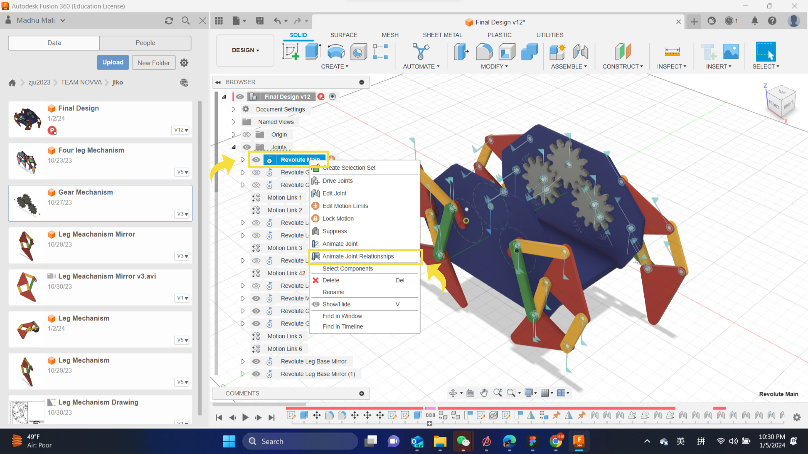
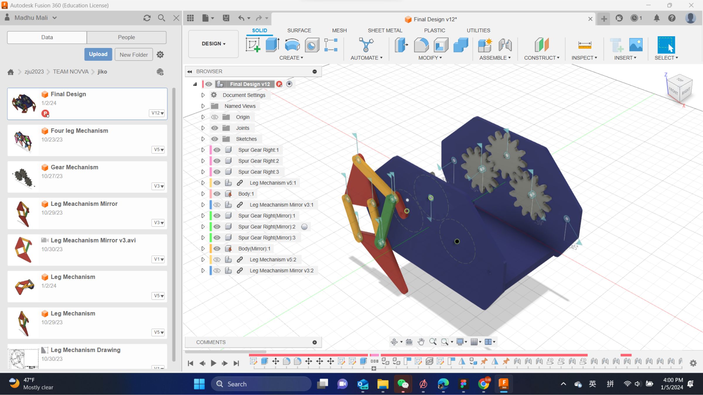
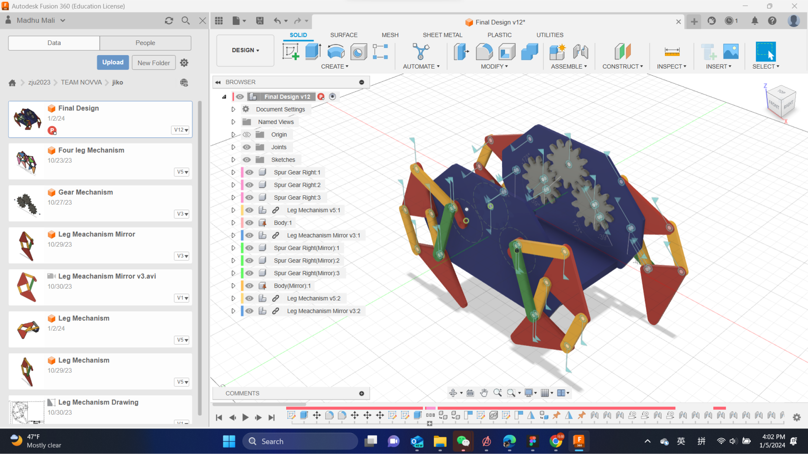
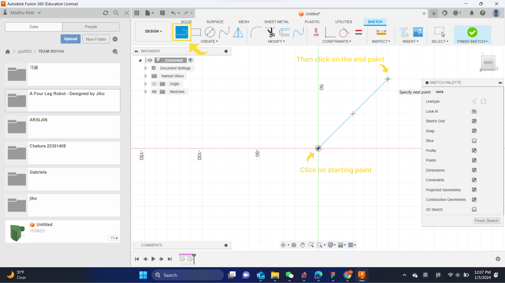

Step 13: How to use automated modeling in Fusion 360
The body structure of the robot that we have created was a simple
design. But we can actually make it an interesting and creative design
using automated modeling feature in Fusion 360.
We will show you how to use Automated Modeling in Fusion 360 to create
and explore new design concepts.
Prepare the Design
Simplify your design by removing unnecessary details or features
that are not relevant to the connection problem.
Split your design into separate bodies or components that represent
the parts you want to connect or avoid.
Create additional faces or bodies that represent the design
requirements or constraints that you want to enforce or respect.
The first input for Automated Modeling is to select two or more faces
that you want to connect by generating a new solid body between them.
You can select the faces from the dialog box or from the canvas. You
can also use the selection filters to select only faces or bodies.
Select Bodies to Avoid
The second input for Automated Modeling is to select one or more
bodies that you want to avoid by creating a new solid body that does
not intersect or overlap with them. You can select the bodies from the
dialog box or from the canvas. You can also use the selection filters
to select only faces or bodies.
Adjust Settings and Generate Outcomes
You can change the following settings from the dialog box:
Number of outcomes:
This is the number of design alternatives that you want to generate.
You can choose from 3, 5, or 10 outcomes. The more outcomes you
choose, the longer it will take to generate them.
Complexity:
This is the level of complexity or detail that you want to see in
the outcomes. You can choose from Low, Medium, or High complexity.
The higher the complexity, the more organic and intricate the
outcomes will be.
Style:
This is the style or preference that you want to apply to the
outcomes. You can choose from Smooth, Sharp, or Mixed style. The
smooth style will produce outcomes with more curved and continuous
surfaces, the sharp style will produce outcomes with more angular
and discontinuous surfaces, and the mixed style will produce
outcomes with a combination of both.
Display mode:
This is the mode or view that you want to use to display the
outcomes. You can choose from Shaded, Wireframe, or Transparent
mode. The shaded mode will show the outcomes with solid colors, the
wireframe mode will show the outcomes with only edges, and the
transparent mode will show the outcomes with semi-transparent
colors.
Add or Edit Outcomes
Add outcome:
To add the selected outcome to your design, click the Add button in
the dialog box. This will create a new body or component in your
design that contains the new geometry. The new body or component
will be parametric, meaning that you can edit it using the
parametric timeline. You can also rename or move the new body or
component in the browser.
Edit outcome:
To edit the selected outcome further, click the Edit button in the
dialog box. This will open the Form workspace, where you can use the
Form tools to modify the shape and appearance of the new geometry.
You can also use the Sculpt tools to edit the T-spline surfaces of
the new geometry. When you are done editing, click the Finish Form
button to return to the Design workspace.
Repeat or Exit Automated Modeling
To repeat the Automated Modeling process, click the Repeat button in
the dialog box. This will clear the previous inputs and settings, and
allow you to start a new Automated Modeling session.
The Generative Designs without Avoiding Bodies
The Generative Designs without Avoiding Bodies
Step 12: Sharing the final project
Once you have completed your design, you can share your work with your
team or anyone interested.
Click on ”Files” -> Select “Share”. This will give you options to
control your privacy settings over your design.
You can either share this link to anyone or else embed the link in
your other projects using following code.
Fusion 360 also gives you the option to export your design in many
file formats including *.3fd, *.obj or *.sat and capture the work in
*.jpg or *.png format.
Step 11: The 2D engineering drawing
In Fusion 360, you can generate the 2D engineering drawing of your
design.
Go to “Design” -> Select “Drawing From Design” -> press “Enter”.
This will bring you to the drawing panel. Place the drawing sketch
as you required with a proper scale.
With dimensions you can mention the specific dimensions of your design
as follows.
Step 10: The robot is ready!
Great work! Now the robot is ready. You can select one joint and run
the “Animate Joint Relationship” and see the working of the final
design.

Step 9: Defining motion links
As of now Fusion 360 has no option to mirror components with the joint
relationships as well. Once you mirror four leg component sets and
complete your design you will have to define the motion types for the
new components again.
Make sure now you have changed the “Body” of your design to “Ground”
component.
Now if you try to animate the joints you will notice that not all the
joints are working at the same time. To fix this you have to add
motion llinks.
Go to “Assemble” -> Select “Motion Links” -> Select the joint
that you want to link. The below is an example to linking the rotation
of three gears.
Before the motion link
After the motion link
Step 8: Using the components in final design
Now you have A Leg Mechanism and a Gear set. You can make a new design
file to start the final steps of your design.
You should first design a one more component to define as the body of
the robot. This can be any kind of design as your preference.
Once done right click on the “Leg Mechanism” design file from the
right side menu, then click on “Insert on Current Design”.
This will give you some options as follows to place the design you
imported from your previous work. Adjust according to your body
structure and place the leg mechanism design.
The final outcome will look as follows.

Now to add other remaining legs you can use the “Mirror” option.
Select the component set “Leg Mechanism” -> Go to “Create” ->
Select “Mirror” -> Choose the “Mirror Plane” as required and press
“Enter”.
You final design should look as follows.

At this stage you can still choose to modify your design. Go to the
relevant component and right click -> Select “Edit Feature” ->
Make changes accordingly.
You can select any component -> Go to “Modify” -> Select
“Appearance” -> Change the colour as your desire.
Step 7: Assembling components with joint relationships
In our design project we have already created the components in
accordance with the assembling design and layout. But still we have to
define the join types and the joint relationships between the
components.
Let’s talk about the Leg Mechanism first!
In our design, the black colour component will be the fixed component.
Right click on this component -> Click on “Ground”. This will be
visible with a pinned icon next to your component name.
Go to “Assemble” -> Select “Joint” -> First from the “Back View”
select the Leg Component adjacent to the fixed component, then from
the “Front View” select the Fixed Component. Go to the “Motion” option
and change the motion type to ”Revolute“.
Follow the same steps with other joint points as well. In our design
we will not use any other type of joint motion type. Once everything
is done, right click on one of the “joints” -> click on “Animate
Joint Relationships” and you will see a moving leg mechanism as
follows.
Step 6: Using Fusion 360 plug-ins for specific components
You can always use the previously discussed method to make any
component according to your design. But when it comes to mechanical
components, Fusion 360 provides specific plug-ins to make it easier to
include mechanical components to your desing.
In this project you will use SpurGear plug-in to add the gears to the
robot design.
Click on “Utilities” -> Select “Add-ins” -> From the “Script and
Add-ins” menu choose the “SpurGear” -> Click on “Run”.
Edit the parameters of the gear as follows in oder to match it up with
our robot design. Once you click “ok” the gear will be added to the
design.
Copy the gear 3 times and place them according to following diagram.
We will use this add the end when assembling the components.
This is only one plug-in of Fusion 360. You can read more about Fusion
360 plug-ins and extensions from
here.
Step 5: Making components based on the sketch
Once you are done with the sketch click on “Finish Sketch”. This
sketch will be the based sketch for making the leg components.
Now you have to again draw another sketch based on the first sketch in
order to make components. To make sure that you are using the same
parameters, you can use “Project” option first as a guideline.
Select “Sketch” -> Under the “Create” menu select “Project” option
-> Select the object/objects of your initial sketch to follow up
-> once done it will show you the guideline to make a new sketch
(at this point you can hide the unnecessary sketches) -> Give an
offset of 5 mm and Draw tangent circles at the edges in order to make
the design components as required.
Finish the sketch -> Select “Extrude” option -> Give the
“Distance” value 3 mm -> Select “Operation” type as “New Component”
-> Press “Enter”.
Follow these steps for all the objects in the sketch and your final
output will be as follows. In order to get the component layering
correctly, make sure ti change the direction of extrude while making
components or after making the components you can use “Move/Copy”
option to change the placement.
Step 4: Drawing the basic sketch
Select “Create Sketch” -> Select a plane to sketch on -> Select
the “Line Tool” -> Start drawing the basic leg structure according
to the Jansen Mechanism.

There are two methods to add dimensions to a sketch. One method is
while drawing. The other way is after finishing the basic drawing.
Here I have explained the second method as it is easier with pre
defined dimensions.
Go to “Create” -> Select “Sketch Dimensions” -> Click on the
“Object of the Sketch” that you want to add the dimensions -> Type
the pre defined “User Parameter Value” accordingly -> Press
“Enter”.
Once you completed the sketch it will look as follows.
Step 3: Defining the user parameters
Usually when we need to draw anything Fusion 360, we can just define
the dimensions of it after drawing. But in a complicated project it
will be quite difficult to manage these manual dimensions. It is
better to use “User Define Parameters” so that later we can retrieve,
modify and inspect the drawings easily.
Go to “Modify” -> Select “Change Parameters” -> Select “User
Parameters” -> Click on “+” -> Enter the “Name” and “Value” of
the parameter -> Click “ok”.
For this project you have to add following user define parameters. The
use of these parameters will be explained in next step.
Step 2: Starting the project
First you need to create the project folder and the necessary files.
(In my case, I had an already created project folder of our class. I
created a new folder as “A Four Leg Robot” inside this project folder
and added a new design file named “Leg Mechanism”).
You can always “Rename and Delete” a created folder or a file by right
clicking on it.
Step 1: Understanding the theory
The Theo Jansen mechanism, also known as the Jansen linkage or Jansen
walker, is a mechanical linkage system that simulates the leg
movements of certain walking creatures, such as insects. It was
inspired by the leg movements of the Strandbeest, which are kinetic
sculptures created by Dutch artist Theo Jansen. The Jansen mechanism
consists of a complex arrangement of links and pivots that, when
driven by a rotating crank, produces a walking motion.
The mechanism usually features multiple legs. But in order to
understand the concept behind the mechanism, it’s better to consider a
one leg section.
Here, the A and L legs are fixed and the leg M is rotating around as
shown in the picture making the movement of the other connected legs.
The above mentioned values are actually the mathematically proven
numbers to match up with this mechanism. When you are trying to design
any prototype based on this theorem, it is better to use these values
or multiples of these values according to the requirement.
A Four Leg Robot
We have designed and simulated a walking robot mechanism using the
famous mechanism theory called “Jansen Mechansim” and we have
explained below the entire procedure of simulating this 3D model using
Fusion 360.